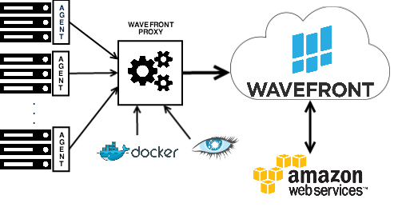

Wavefront is a high performance streaming analytics platform designed for monitoring and optimization. The service is unique in its ability to scale to very high data ingestion rates and query loads. The result is a technology stack unique in its ability to scale horizontally while providing access to all of the granular (not aggregated) data collected for all time.
The major components of Wavefront include the Wavefront SaaS application, which facilitates economies of scale for deployment, flexibility, and time to value and the Wavefront proxy. The Wavefront proxy is the interface to collector agents, which instrument hardware and software applications. The Wavefront application can also collect metrics directly from external metrics services such as those provided by Amazon Web Services. The diagram below depicts each of these components.

It’s possible to have several data centers from different locations feeding data into Wavefront versus traditional on premise solutions which can only provide a view of one location at a time. At a high level, the setup process typically consists of configuring collectors to send data to one or more Wavefront proxies and then configuring the Wavefront proxies to forward this data to the Wavefront application.
The following sections describe these components in more detail.
Wavefront Application
The Wavefront application has the following components:
- user interface
- query/compute layer
- storage layer
- data ingestion layer
Each of these components can be scaled out horizontally to accommodate different use cases, data quantities, and ingestion rates.
The user interface (UI) is displayed to a browser, and all queries and computations are processed within the query/compute layer in the Wavefront cloud. You log into the Wavefront UI via a standard web browser in many cases using an SSO solution. One unique feature of the UI is the ability to display charts with data over any range of time (e.g. over an entire year). Another important architectural feature of Wavefront is the ability to use its API to interface with a custom application. All actions within the UI have the capability of being accessed via the API.
The compute layer combines points of data to display within a single pixel (depending on screen resolution) according to the summarization method that is most appropriate for your use case. However, all calculations are done on the raw data set to ensure you get the most accurate representation of your query. For example, you may want to compare your data center’s performance between two different years during the holiday period.
One of Wavefront’s differentiators is the Wavefront Time Series Query Language, which allows you to harness the power of the platform to design your own key performance indicators from all of your metric data. The ts() language has support for sophisticated statistical functions and can be used to construct simple and complex queries across multiple metrics/sources leveraging any combination of ts() functions (which include arithmetic operators, aggregate functions, time functions, filtering operators, conditional functions, etc.). The primary job of the query layer is to execute ts() language queries in the most efficient means possible. The query layer is extremely flexible and optimized to scale to the enormous data volumes that Wavefront collects and maintains. This layer is optimized to avoid unnecessary calls on the storage layer, and to ensure a very fast “speed of thought” response time. Queries can be used to drive a chart or an alert. An alert can be used to notify an individual or a group within your company about a particular condition that has been met. For instance, you may want to alert operations if a server goes down. The alerting functionality integrates with services such as PagerDuty to call the appropriate person/group in such a situation.
The storage layer is designed to be elastic to accommodate an ever-changing number of metrics and sources. These is no fixed limit on the amount of data that can be stored in the storage layer.
The data ingestion layer has been designed to accommodate extremely high data rates (in excess of 1 million points per second). It can be scaled appropriately depending on your expected data rates and growth plans. Like the storage layer, the data ingestion layer can have its capacity increased as you grow your usage of Wavefront.
Wavefront Proxy
In most cases before metrics can begin streaming to Wavefront from a host, application, or service you must add a Wavefront proxy to your installation. The Wavefront proxy allows you to send your data to Wavefront in a secure, fast, and reliable manner.
The proxy is a Java program that sends data to Wavefront over HTTPs and handles authentication with your Wavefront instance through a simple token. The proxy handles hundreds to thousands of simultaneous clients. It consolidates points into configurable batches (usually 1 second), adding minimal latency (0.5 second, on average, due to the 1 second batches).
The proxy works with Wavefront application response codes to ensure end-to-end flow control (due to rate limits or other capacity/performance thresholds). To address network connectivity issues, it queues point internally in memory and to disk. Once connectivity is restored it replays queued points but prioritizes real-time traffic. The proxy generates metrics on the Proxy’s point rate and memory usage for easy monitoring of the pipeline within the Wavefront application.
In initial deployments you can start with one Wavefront proxy. However, to enable fault tolerance and higher data rates, production environments more typically employ a load balancer sending data to multiple Proxies as shown below:

Agents
Agents Agents collect metrics from monitored systems and send them to the Wavefront proxy. Monitored systems can include hosts, containers, and many different types of applications. Wavefront supports many standard agents, including Telegraf, Docker cAdvisor, and others.